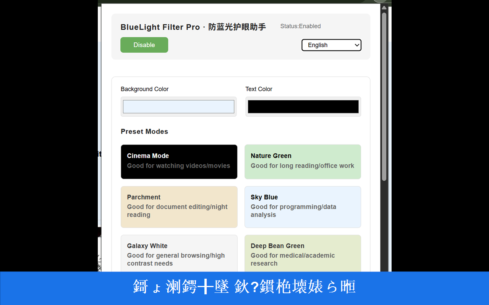
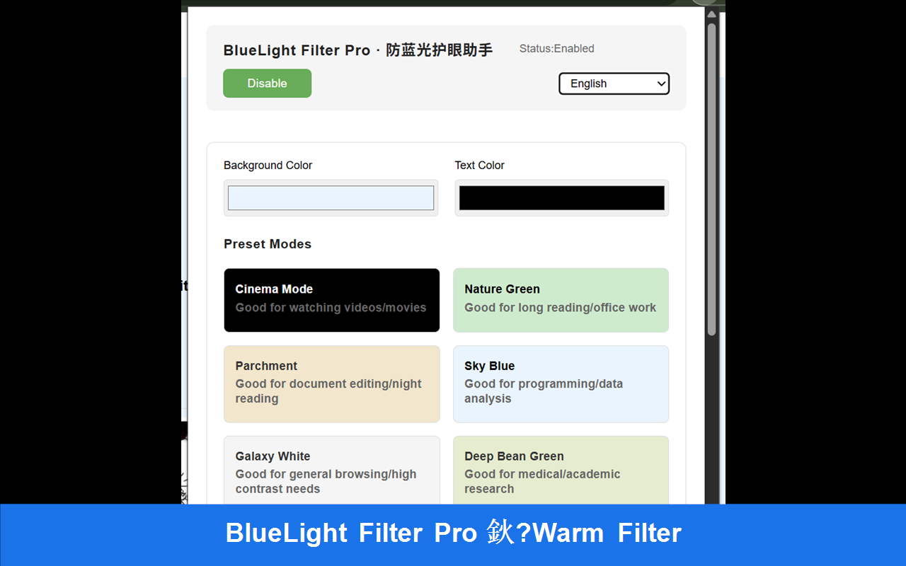
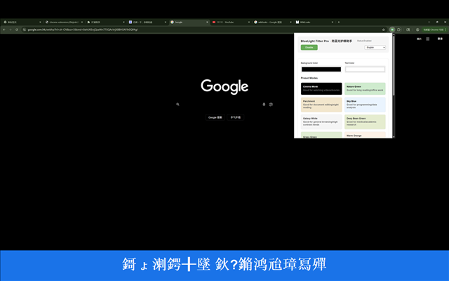
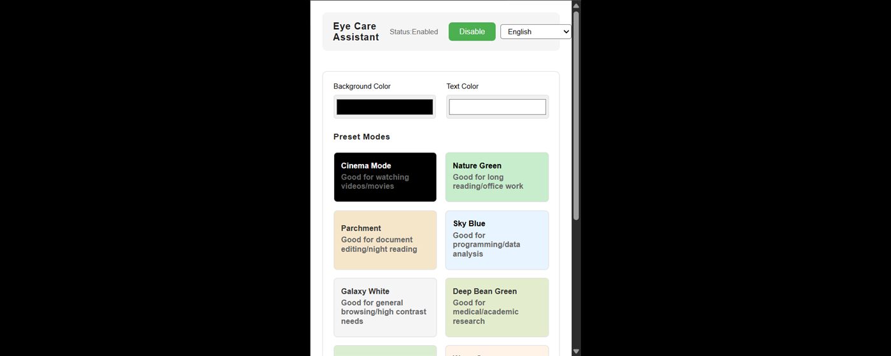

今天做了什么
- 修复并重跑
generate-localized-overlays.ps1，通过模式匹配底图避免中文文件名编码问题。 - 将文本绘制矩形类型改为
System.Drawing.RectangleF，解决DrawString参数类型转换异常。 - 成功生成带中英文标注的本地化截图（1280×800 与 640×400），并完成目录预览校验。
- 将
manifest.json版本从1.32升级为1.33。 - 运行打包脚本，生成
uploadtochrome/目录并压缩为uploadtochrome_v1.33.zip。
产出物清单（可复用）
- 商店素材：
store-assets/output/下的本地化截图与推广图。 - 上传包目录：
uploadtochrome/（含manifest.jsonv1.33）。 - 打包压缩：
uploadtochrome_v1.33.zip。 - 商店链接：见本文顶部按钮。
截图与效果预览




下载与安装
- Chrome 商店安装：点击顶部「Chrome 商店页面」。
- 离线安装：下载 uploadtochrome_v1.33.zip，解压后打开
chrome://extensions，启用「开发者模式」，点击「加载已解压的扩展程序」，选择uploadtochrome/目录。
实现细节与小记
- 脚本错误修复：
MethodArgumentConversionInvalidCastArgument来源于DrawString的point参数类型问题；将绘制矩形类型统一为RectangleF后解决。 - 中文文件名兼容：通过模式匹配和自动枚举方式选择底图，绕过潜在的编码/路径解析坑。
- 素材生成策略：底部居中说明条幅、统一背景色、同时输出 1280×800 和 640×400 两套尺寸。
- 打包逻辑：
build.ps1负责复制到uploadtochrome，再用Compress-Archive生成 zip。
自动化与性能摘要
- 本地静态页（store-assets.html）：INP 15 ms、CLS 0.00（详见 perf-store-assets.txt）。
- 开发者站点（developer.chrome.com）：CLS 0.00（详见 perf-devsite.txt）。
- 自动化产出示例：页面整页截图、素材目录截图。
复现方式：运行 automation/mcp-start-local-servers.ps1 启动本地预览；在 MCP 客户端使用 automation/mcp-batch-screenshots-prompt.md 模板录制与截图。
后续可选动作
- 生成更多不同裁剪/构图的本地化截图（如移动说明条位置）。
- 按语言分目录并生成清单文件，便于商店多语言素材管理。
- 补充英文/法语等商店描述与关键词，提升搜索曝光。